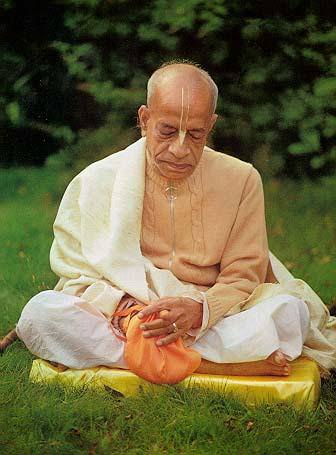

Abhay Charan Bhaktivedanta Swami Prabhupada egyike volt a XX. század - és nyugodtan mondhatjuk, a világtörténelem - nagy hitoktatóinak. 1896-ban látta meg a napvilágot Kolkata településen, Indiában, akkor még csak hosszú neve első két tagját viselve. A hindu vallás, pontosabban az ősi gaudiya- vaisnavizmus tanai tanulmányozásának és a nyugati világgal való megismertetésének szentelte életét. A negyvenes évektől mint elismert vallástudós és lapszerkesztő ősi védikus iratokat fordított angol nyelvre. Vrndavan szent városában, az ősi Radha-Damodara templomban, csendes magányban dolgozgatott a Srimad Bhagavatam hősi eposz, a Bhagavad-Gíta, a Caitanya Charitamrita és más ősi művek megmentésén, magyarázatokat dolgozva ki hozzájuk a modern kor emberének. A negyvenes évek végén már országos hírnévnek és elismertségnek örvendett, de ő mindvégig megmaradt szerény gurunak. 1959-ben belépett a lemondott szannyaszi rendbe, ami európai értelemben nagyjából a mi ferences szerzeteseinkéhez hasonló életet jelent. Két évtized munkájával több tízezer oldalnyi ősi szent iratot látott el magyarázatokkal és adott ki angol nyelven. Gyakorlatilag az egész indiai teista irodalmat átmentette az utókor számára. Írásaiból, az ötezer éves bölcsességekből ma is bárki meríthet szellemet mindennapi életéhez.
Hosszú nevét Krsna, azaz az Istenség Legfelsőbb Személyiségének odaadó szolgálata révén érdemelte ki. A "Bhaktivedanta" szó gyakorlatilag tudományos fokozat, jelentésének körülírása: "Istent szolgáló, Istent felismerő." E címet a Gaudiya Vaisnava Egyesület adományozta neki 1947-ben. Tisztelőitől kapta a "Prabhupada" nevet, ami szó szerint azt jelenti: "kinek lábai előtt prabhuk (mesterek) hevernek (hódolat gyanánt)." A "swami" pedig tanítót jelent.
1965-ben Srila Prabhupada mindössze hét dollárnyi rúpiával a zsebében, egy esernyővel, néhány doboz kétszersülttel és egy bőrönd angol nyelvű könyvvel indult New Yorkba, hogy beteljesítse lelki tanítómestere kívánságát, és elvigye a XIV. században élt Caitanya Mahaprabhu - lényegében India Jézusa - tanításait a Nyugatnak. Meg sem fordult a fejében, hogy ne járna sikerrel, hiszen pontosan tudta, hogy Krsna minden helyzetben segíti az ő bhaktáját (szolgáját). Így is történt. A szerény, halk szavú bölcs hetek alatt kallódó amerikai fiatalok százait győzte meg, hogy a drog, a mocsok, az erkölcstelen élet helyett válasszák Istent, India szelíd vallását, és énekeljék vele Krsna szent nevét, a Hare Krsna maha-mantrát. A "Hare Krsna Mozgalom" egyre növekedett, egyre több amerikai városban jelentek meg a borotvált fejű, dhótiba öltözött szerzetesek, és még Srila Prabhupada életében valóra vált Caitanya Mahaprabhu jövendölése, miszerint a Hare Krsna mantrát egy napon a Föld minden városában énekelni fogják. Így is van, hiszen nincs olyan város a Földön, ahol ne hallották volna a következő sorokat:
Hare Krsna Hare Krsna
Krsna Krsna Hare Hare
Hare Rama Hare Rama
Rama Rama Hare Hare
A gaudiya-vaisnavizmus végtelen bölcsességének bemutatása nem célja e cikknek, de kevés vitatnivaló akad helyességén, ha megnézzük Srila Prabhupada munkájának végeredményét. 1977-ben bekövetkezett haláláig tizennégyszer utazta körül a Földet, hogy vallási előadásokat tartson mind a hat kontinensen. A nyugati világot megismertette az ősi indiai oktatási rendszerrel. Megalapította a Bhaktivedanta Book Trust-ot, a világ legnagyobb, vaisnava vallási iratok kiadásával foglalkozó társaságát, amely jelenleg is mintegy hetven különféle nyelven adja ki Prabhupada és más vaisnava szerzők műveit. Ő maga több, mint hatvan vallástudományi könyvet írt, de tanította követőit konyhaművészetre, ruhakészítésre, festészetre és az ősi indiai tudományok többségére is. Könyveit világszerte nagy elismeréssel fogadták más vallások képviselői, és dicsérően nyilatkoztak róla neves teológusok, történészek és egyéb tudósok. Srila Prabhupada igazi szent ember volt, akinek soha nem volt saját tulajdona a ruháján és a könyvein kívül, mindent Isten dicsőségére tett és alkotott. Az International Krshna Conciousness Movement (ISKCON) elnevezésű szervezet ma világszerte több ezer templomot, iskolát, önellátó farmközösséget és egyéb intézményt üzemeltet.
Miután mindössze hat év alatt önellátóvá tette mozgalmát, Srila Prabhupada 1971-ben hazatért Vrindavanba, hogy tovább folytassa munkáját. Itt halt meg 1977-ben. Emlékét mindmáig illő tisztelet övezi Indiában és világszerte. Minden Hare Krsna templomban ott áll a szobra, arcképét gyakran a Krsnát ábrázoló szent szobrok, a murtik mellé helyezik. Életművét jól összefoglalta Sri Atal Behari Vajpayee, India miniszterelnöke egy 1998-ban tartott beszédében: "Bhaktivendanta Swami Prabhupada megérkezése az Egyesült Államokba 1965-ben, és az a különös népszerűség, amelyre mozgalma mindössze húsz év alatt szert tett, kétségkívül az évszázad egyik legnagyobb spirituális eseménye." Srila Prabhupada élete végére a legnagyobb világvallás legelismertebb modern képviselőjévé vált.
Mint azonban a nyitott szemmel járók tudják, a világon nem csak tiszteletreméltó vallástudósok és hitoktatók élnek, hanem olyan emberek is, akiknek feltett szándéka a vallás lerombolása, a kultúra és a rend megsemmisítése, hogy a pénz és az érdekek uralmát valósítsák meg, ahol a profit felülbírálja a tisztesség és az erkölcs szavát. Több titkos és kevésbé titkos szervezet alakult a történelem során, amelyek célja az egyházak szétzúzása, egy új világrend eljövetelének kikényszerítése. Ilyen például az Illuminátusok (Fényhozók) páholya, amely egy szabadkőműves rendből fejlődött ki. Nagyrészt ezek a társaságok és szimpatizánsaik álltak, nyíltan vagy titokban, a "felvilágosodás" néven emlegetett folyamat mögött, amelynek során, úgymond, megszabadították az embereket a "babonáktól", és "világosságot" hoztak nekik. A nagy francia forradalomtól a kommunizmusig és napjaink őrjöngő liberalizmusáig, a nemzetállamok lerombolásáig hosszú történelmi folyamatot indított el ez az évszázados aknamunka. A Lucifert (Fényhozót) követő Illuminátusok és szövetségeseik fekete ujjlenyomataival tele van az elmúlt háromszáz év történelmének szövedéke. Magától értetődően ennek a mozgalomnak minden tiszta és Istent tisztelő ember szálka a szemében. Srila Prabhupada is az volt. Hiszen természetesen az Illuminátusok és a szabadkőművesek nem csak a kereszténységgel állnak hadban, hanem mindenkivel, aki az általuk propagált "modern" életmóddal hatékonyan szembeszáll. Ahol szabadkőművesek bukkannak fel, ott előbb-utóbb gyilkolni kezdik Isten szolgáit, mint azt az ifjútörök mozgalomtól kezdve az 1919-es magyarországi kommünön keresztül a Közel-keleten napjainkban zajló muszlimellenes hadjáratig megfigyelhetjük. A közelmúltban folytatott kutatások arra utalnak, hogy a nagy vaisnava hittudóst is az Illuminátusok ügynökei gyilkolták meg.
Srila Prabhupada 1970 szeptember 2-án egy barátjának küldött levelében a következőt írta: "Tény, hogy a nagy és baljóslatú mozgalom beépült az Egyesületünkbe. (It's a fact however that the great sinister movement is within our Society.)" Srila Prabhupada mindig nagyon pontosan fogalmazott, sohasem használt jelzőket vagy más kitételeket ok nélkül. Ráadásul soha nem hagyta elragadtatni magát, soha nem esett túlzásokba. Itt egy "mozgalmat" említ, ami azt jelenti, nem egy vagy két ember épült be az ISKCON mozgalomba rossz szándékkal, hanem egy bizonyos mozgalom. Mégpedig egy "nagy és baljós" (great and sinister) mozgalom. Mire gondolhatott? Kiknek állhatott érdekében beépülni egy szelíd, politikamentes vallási szervezetbe? Prabhupada csak az Illuminátusokra gondolhatott. Más mozgalomra nem illik ez a leírás.
1976 május 3-án, egy Honolulun történt beszélgetés során Srila Prabhupada azokról a démoni erőkről - kamszákról - beszélt, akik az anyagi világban Isten követői és maga Isten ellen támadnak. Elmondta, hogy nincs ebben semmi meglepő, ilyenek mindig is voltak, és mindig is lesznek. Ekkor kijelentette, hogy várható, hogy mindenféle módon támadni fogják, talán meg is fogják őt gyilkolni, ha a mozgalma túlságosan megerősödik. Hiszen a gaudiya-vaisnavizmus önmegtartóztatást, párkapcsolati hűséget, vegetarianizmust, a drogok és szerencsejátékok tilalmát hirdeti, ami egy sor sötét üzletet ronthat világszerte. Srila Prabhupada a következőt mondta:
"Mi arra utasítunk: ne fogyassz mérgeket. Ezért azok, akik cigaretta és italok eladásából gazdagodnak, nem fogják... Azonnal öljétek meg! Igen, így. Ha ez a mozgalom fennmarad és megerősödik, oda az üzletünk. Öljétek meg! Tehát biztosan lesznek ellenségeink. (...) A Hare Krsna mozgalom veszélyes a modern életstílusra. (...) Meg fogják próbálni eltiporni ezt a mozgalmat. Vagyis Őt magát. Krsna és Krsna mozgalma egy és ugyanaz. Krsnát mindig el akarták pusztítani a kamszák, és társaságuk, a démonok. Ezért hamarosan jönnek. Már itt is vannak. Ne keseredjetek el, mert ez csak azt jelenti, hogy sikeresek vagyunk. (...) Jézus Krisztus urunkat is megölték. Lehet, hogy engem is meg fognak."
Srila Prabhupada tehát számított arra, hogy akár a legbrutálisabb támadás áldozatává válik. Nyugati, materialista ember számára talán elképesztő, hogy ezt milyen sztoikus nyugalommal fogadta. De tehette, hiszen hitt a lélekvándorlásban, és pontosan tudta, hogy Isten szolgájaként semmi rossz nem érheti, teste elpusztítása számára csak annyi, mintha elszakítanák a köpenyét. De igazából a keresztények is így gondolkodnak: "Sorsunk Isten kezében van", mondaná egy keresztény szent hasonló helyzetben. Prabhupada egy 1968 október 21-én Seattle-ben tartott leckeórán beszélt is erről a bhaktáknak:
"Ha követjük a világ történelmét, láthatjuk, hogy akik Krsna vagy Isten szolgálatának éltek, mindig üldöztetést szenvedtek. Az Úr Jézus Krisztust keresztre feszítették, Haridasza Takura darabjait huszonkét piactéren tették közszemlére, Prahlada Maharadzsát a saját apja kínozta meg. Most is történhet ilyesmi. De ne féljetek. Ne féljetek attól, hogy valaki megkínoz vagy megkísért. Kétség nélküli Krsna-tudatban kell tovább élnünk, és Krsna megvédelmez bennünket."
Egy vaisnava szerint nincs értelme valakinek a testét megölni. Krsna ad neki új testet, hogy feladatát befejezhesse, ha jó úton járt. Ezért Prabhupada sem félt a haláltól. Élete utolsó hónapjaiban a haldoklásra csupán mint kényelmetlenségre tekintett. 1977 során már ágyhoz kötött betegként várta a halált, miközben tanítványai serege virrasztott éjjel-nappal körülötte. Számos kamera és mikrofon is volt a helyiségben, hiszen minden szót rögzíteni akartak, ami a nagy acarya élete utolsó napjaiban elhangzik. Ennek köszönhetően minden beszélgetés, ami ebben az időszakban elhangzott, szintén rögzítésre került. Így például egy 1977 november 9-én elhangzott párbeszéd a súlyos beteg Srila Prabhupada, egy tanítványa és kezelőorvosa között.
Prabhupada: Valaki szerint megmérgeztek. Lehetséges.
Balaram Mishra: Hmm?
Orvos: Mit mondott?
Prabhupada: Valaki azt mondta, hogy mérget adtak.
Orvos: Kinek?
Prabhupada: Nekem.
Haldoklása során a nagy acarya még többször is beszélt arról, hogy egy raksasa (démoni személy) megmérgezte őt. Nézzük, mi lehet ebből az igazság.
Ez a fénykép röviddel a nagy tanító halála előtt készült. Srila Prabhupada napszemüveget visel, mert a szeme rendellenesen érzékeny lett a fényre. Kezén forradások láthatóak. Ezek az arzénmérgezés tünetei. Az arzén nehézfém, veszélyes méreg, gyorsan öl azáltal, hogy tönkreteszi a szervezet szinte minden szövetét, a vértől az idegsejtekig. Azonban lassú adagolásával is lehet ölni, fokozatosan, nagy kínokat okozva. Prabhupada halálát ilyen lassú mérgezés okozhatta.
Halála után több vizsgálatot is végeztek holttestén. Dr. J. Stephen Morris, a Missouri-Columbia Egyetem doktora kijelentette:
"A [Prabhupada hajában] mért arzénkoncentráció 2,6 mikrogramm grammonként. Ez körülbelül hússzorosa az Egyesült Államokban élő, arzén hatásának ki nem tett személyeknél tapasztalható átlagnak.
"
Ugyanakkor Richard T. Callery, az amerikai Nemzeti Orvostudományi Szolgálata Törvényszéki Tudományos Laboratóriumának fő orvosszakértője a következőt nyilatkozta:
"Véleményem szerint orvosi szempontból meglehetős biztonsággal kijelenthető, hogy mivel ez a személy (Srila Prabhupada) korábban számos myokardinális infarktuson esett át, illetve nem inzulinfüggő diabetes mellitusban szenvedett, és korának megfelelően gyenge egészségi állapotban volt, valószínűleg döntő szerepet játszott halálában a szervezetébe bevitt arzén mérgező hatása."
Mindez arra utal, hogy Swami Prabhupada halálát arzénmérgezés okozta.
Élete utolsó heteiben pedig Prabhupada tanítványai körében töltötte. A hangfelvételek tanúsága szerint Prabhupada többször kérte, hogy vigyék őt szabad levegőre, de nem tették meg. Felmerül a kérdés, hogy vajon volt-e közük a tanítványoknak a megmérgezéséhez? Vajon voltak-e közöttük beépült Illuminátus-ügynökök, akik folyamatosan adagolták az arzént mesterük ételébe, italába? Nos, erre a már említett kamerák és mikrofonok adják meg a választ. Néhány hangfelvételen ugyanis többé-kevésbé kivehetően hallani lehet néhány személy suttogó párbeszédét, amint megbeszélik, hogyan mérgezik meg Srila Prabhupadot. Itt van például egy felvétel 30 másodperces részlete, amelynek a végén tisztán kivehető, amint valaki azt kérdezi suttogva:
"Is the poison in the milk?" A méreg a tejben van? Mire valaki egy rövid "ühüm"-mel felel.
Más felvételeken is hallhatóak hasonló suttogások. Itt például - kevésbé érthetően - a következő hangzik el:
"Nyomjad, megy lefelé..." Valaki kuncog.
"Megy le a méreg" - jelenti ki ismét az első hang. Közben egy másik személy hallhatóan visszafojtja a nevetését.
 Letöltés
LetöltésMindez nem csak holmi összeesküvés-elmélet, belemagyarázás. Jack Mitchell, amerikai törvényszéki hangfelvétel-elemző mérnök, az Albuquerque-i Commercial Audio and Forensic Audio Engineering cég tulajdonosa elemezte a Srila Prabhupada halála előtt keletkezett hangfelvételeket, és javasolta a bhaktáknak, hogy tegyenek rendőrségi feljelentést, mert a felvételek bizonyítják, hogy a háttérben Prabhupada megmérgezéséről folyik a beszélgetés. Tom Owen, a hasonló profilú OWL Investigations cégnél megismételte Jack Mitchell vizsgálatait, és ugyanerre az eredményre jutott. Összefoglaló szakértői jelentésében a következőt írta:
"Végkövetkeztetés: A hangfelvételen méreg felhasználásáról hallhatóak beszélgetések. Álláspontom szerint ez további vizsgálat alapját képezheti. A holttest exhumálása rendezhetné a kérdést, de úgy tudom, ez vallási előírásokba ütközne. Törvényszéki toxikológus és gyilkossági nyomozó bevonását javaslom. Véleményem szerint a "méreg" szó tisztán érthető több ponton is."
De vajon volt-e az ISKCON-ba beépült Illuminátusoknak más céljuk is, mint Srila Prabhupada meggyilkolása? Igen, természetesen volt. Magát a mozgalmat is megpróbálták megsemmisíteni, vagyonát, az értékes ingatlanokat és a farmközösségeknek otthont adó földeket megszerezni. Már Prabhupada halála előtt is több országban azzal vádolta meg a sajtó a Krsna-tudatú mozgalmat, hogy iskoláikban gyermekeket molesztálnak. Megpróbálták a közvéleménnyel elhitetni, hogy a krisnások valójában egy hazug szekta, aminek csak a pénzgyűjtés a célja. Még a Bhaktivedanta Book Trust egyes kiadványaiban is meghamisították Srila Prabhupada szavait. Egy vaisnavát persze ez sem lep meg, hiszen a Védák megírták, hogy a démoni személyek mindig így próbálják támadni Isten tiszta szolgáit. A könyvek meghamisításáról Prabhupada is tudomást szerzett, és 1977 június 22-én szigorú utasításban tiltotta meg, hogy szavait "nyelvhelyességi okokból" megváltoztassák. Tanítványai számára írásaiban részletes utasításokat hagyott hátra arra vonatkozóan, hogyan irthatják ki a mozgalom soraiból a hamis bhaktákat, a démoni személyeket, akik csupán a mozgalom vagyonára áhítoztak, és remélték, hogy vezető pozícióba emelkedhetnek, ha Srila Prabhupadát elteszik láb alól.
Srila Prabhupada gyilkosai azonban nem olvasták sem ezeket az intelmeket, sem a Védákat, amelyek leírják, hogy soha nem járhatnak sikerrel. Vagy ha olvasták, nem vették komolyan. Tervük végül nem sikerült. Srila Prabhupada emlékét tisztelettel őrizte meg a világ, akárcsak Mohamedét vagy Szent Antalét, az ISKCON pedig nem omlott össze, és a hamis tanítványoknak előbb-utóbb ajtót mutattak. Az ősi vaisnava iratokat ma is Srila Prabhupadának köszönhetően olvashatjuk és érthetjük meg ma is, és minden Krsna-templomban naponta megemlékeznek a nagy acaryáról.
Prabhupada pedig csendesen ül Krsna-Lokán, a lelki bolygón, és elnézően mosolyog szegény hülyéken, akik azt hitték, az anyagi hatalom megszerzése életük célja.